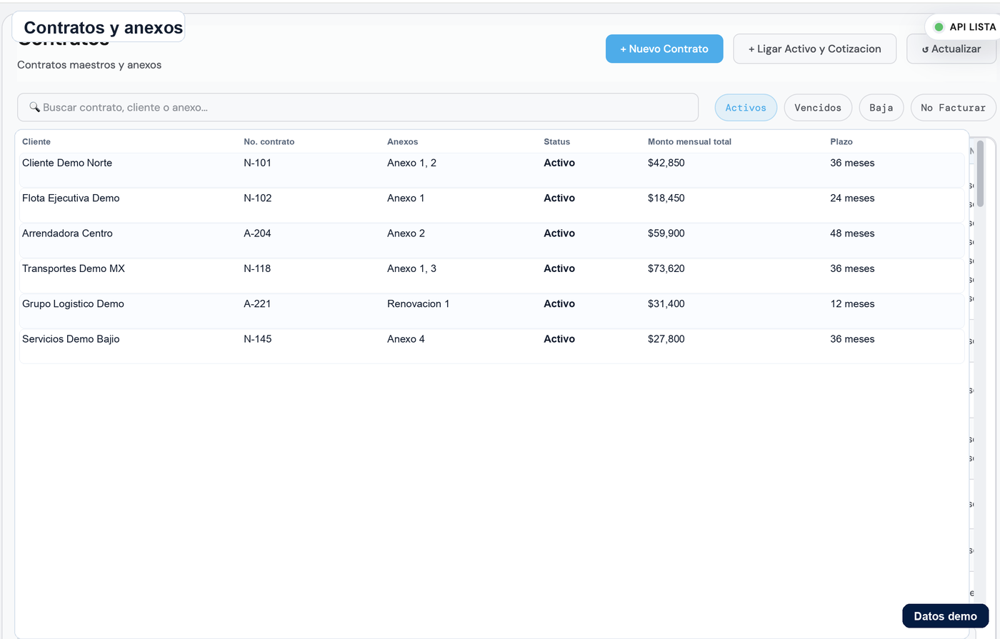
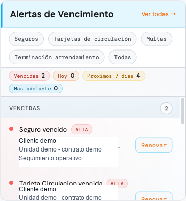

{kind=link}
{kind=link}
Menos doble captura
La misma información se consulta desde cliente, contrato, anexo, activo o cobranza.
El contrato no debe vivir separado del activo, la renta, el anexo, la factura y la cobranza. Janco ayuda a que cada contrato maestro conserve su contexto operativo completo.
En arrendamiento puro, un contrato maestro suele tener anexos, activos, documentos, rentas, cambios, vigencias, renovaciones y decisiones de terminación. Si eso vive en varias carpetas, el equipo pierde visibilidad.
Un software para contratos de arrendamiento puro debe responder rápido: qué cliente está ligado al contrato, qué activo corresponde a cada anexo, qué renta se está facturando, qué documento falta y qué seguimiento operativo sigue.
Datos principales, cliente, vigencia, condiciones comerciales y estado operativo.
Control por activo, monto mensual, plazo, inicio, fin, renovaciones o baja.
Expediente ordenado para anexos, entregas, renovaciones y ajustes.
Rentas, facturas, pagos y saldos visibles desde el contexto del contrato.
Captura con datos demo para mostrar cómo se puede revisar una cartera de contratos sin enseñar información sensible.


Cuando el contrato está conectado al resto de la operación, el equipo puede saber qué pasó, qué falta y qué decisión sigue sin perseguir archivos.
La misma información se consulta desde cliente, contrato, anexo, activo o cobranza.
El historial ayuda a entender cambios, renovaciones, vencimientos y decisiones.
Dirección puede revisar contratos vigentes, anexos, saldos y pendientes con menos reconstrucción manual.
Debe controlar contrato maestro, anexos, activos relacionados, documentos, fechas, rentas, vigencias, renovaciones, baja de activos y seguimiento de cobranza.
Porque el equipo también necesita consultar estado, saldos, activos relacionados, vencimientos, anexos y decisiones operativas sin reconstruir el contexto manualmente.
Sí. Janco conecta contratos, anexos, activos, facturación, cobranza, multas vehiculares, tesorería y reportes para operar arrendamiento puro.
La demo puede recorrer cliente, contrato maestro, anexos, activos, documentos, vencimientos y cobranza.
También podemos mostrarlo con datos demo antes de cargar información real.